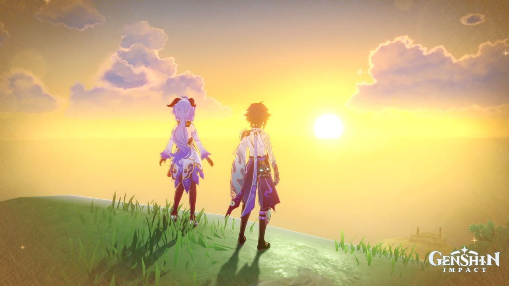
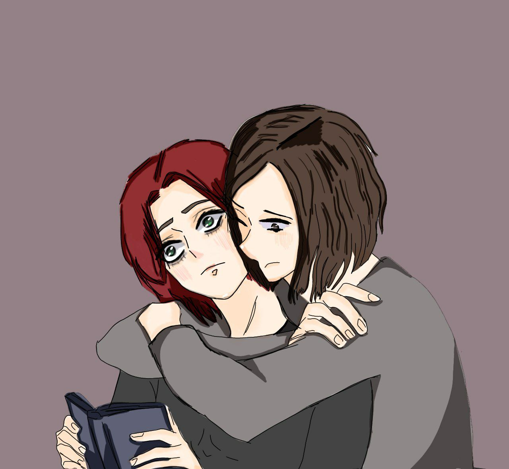
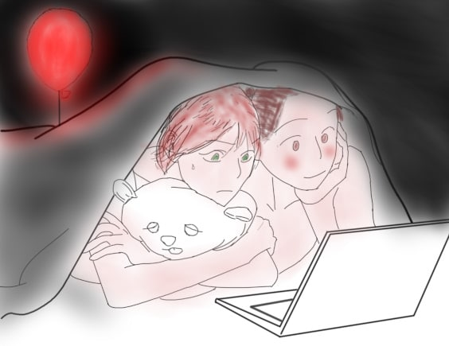
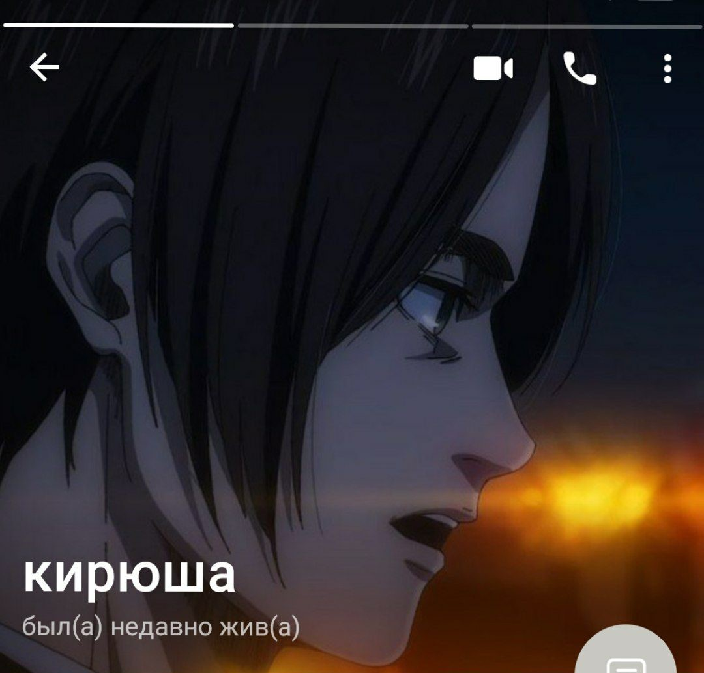
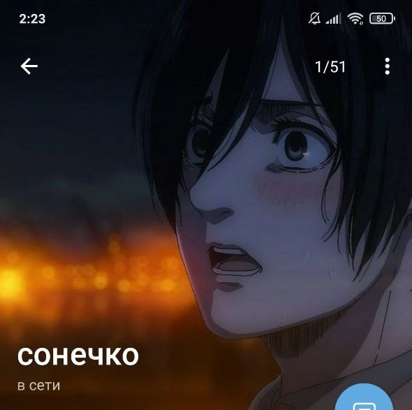

З днем народження, зайченя!
Божечки кошечки, я навіть не знаю що говорити, бо справді, щоб ти розуміла, ми були повинні декілька годин тому обрати парні аватарки, але дехто заснув, тому я рішив приготувати ось такий маленький тобі сюрприз на твоє шістнадцятиріччя, ну по перше, з днем народження котик, я тебе зараз так би міцно затіскав, ти не уявляєш, в мене найтепліші почуття до тебе із усіх можливих...бажаю тобі стабільного ментального здоров'я, щоб тебе ніхто не ображав, але такого не буде, бо ти за мною, як за трьома стінами з колосальними титанами, якщо хтось образить, я тут же вісімдесят відсотків населення знищу, і все буде добре, і ми будемо вільними. Щоб обов'язково підвищила свою самооцінку, бо ти, кажу як серце відчуває, ти найкраща, обожнюю тебе, твою особистість і все що пов'язане з тобою, обожнюю, ти дуже вродлива, дуже мила, в тебе гарне личко, чарівна посмішка, носик, в тебе чудовий зріст, мені буде зручно тебе обіймати із-за цього доречі. З самооцінкою буду допомагати також тобі, тому ти не одна! Хочу розділити усе своє життя з тобою, мені дуже сумно коли тобі сумно і погано, я не знаю, мені в такі моменти шкода, що я не поруч, я би тебе обійняв і не відпускав, чесно, в майбутньому хочу тебе ощасливити, нас ощасливити, серйозно кажу, божечки, в мене зараз Океан Ельзи грає і як раз улюблені строчки: Хто ти є, ти взяла моє життя і не віддала хто ти є, ти випила мою кров, твої очі кличуть, хочуть мене, ведуть за собою... подорожувати по світу разом бажаю, з тобою, та і в цілому, як два інтровертика, насолоджуватись цим життям, разом! Ще раз з днем народження тебе, котик, пам'ятай, що ти найкраща, я обіймаю тебе <3
Катя, ти моє котенятко
я тебе безумно, обожнюю...<3
Дякую тобі за все сонечко, котику, за усі вже існуючи та створені разом, спогади, вони неймовірно теплі для мене, але в майбутньому, ще більше створимо, разом, в житті <3




.


З ДНЕМ НАРОДЖЕННЯ <3